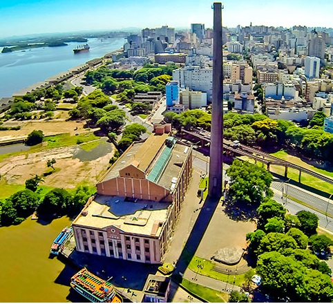

{% extends "base.html" %}

{% block title %}Dashboard - Sistema Template{% endblock %}

{% block content %}
<div class="container">
    <div class="page-header">
        <h1 class="bento-cidade">Bento Gonçalves</h1>
        <p>Veja o que Bento Gonçalves tem a oferecer!</p>
    </div>

   <div class="dashboard-stats">
        <div class="stat-card">
           Bento Gonçalves é uma cidade no estado do Rio Grande do Sul, Brasil, famosa por sua produção de vinhos e belas paisagens da Serra Gaúcha.
            <div class="stat-content">
            </div>  
        </div>
    </div>
    <div class="bento-text">
        <p>Conheça locais para ficar em Bento Gonçalves:</p>
    </div>
    <div>
        <figure class="hoteis-bento">
            
            
            
            
        </figure>
    </div>    
{% endblock %}
